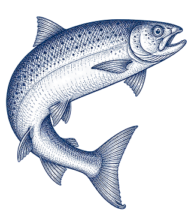

UI kit · Rediseño 2026
Corporativo liviano
Kit de referencia de la Propuesta A: los tokens del sistema (color, tipografía, espaciado, radio, bordes y movimiento) y un ejemplo de cada componente. Las reglas de uso y la adaptación a mobile están en design-system/ui-kit.md y design-system/responsive.md.
Última actualización: 21 de octubre de 2026.
01
Color
En componentes se usan solo los tokens semánticos. Coral 600 para todo texto coral sobre fondos claros; Coral 500 solo para rellenos y gráficos sobre claro, y para texto sobre Navy 950.
Fondos
- Página--color-bg-page
- Suave · Offwhite 50--color-bg-subtle
- Atenuado--color-bg-muted
- Oscuro · Navy 950--color-bg-inverse
- Marca · Navy 900--color-bg-brand
- Marca hover · Navy 600--color-bg-brand-hover
- Marca suave · Navy 100--color-bg-brand-soft
- Acento · Coral 400--color-bg-accent
- Acento hover · Coral 500--color-bg-accent-hover
- Ilustración · Coral 100--color-bg-illustration
Texto y bordes
- Principal · Ink 900--color-text-primary
- Secundario · Ink 600--color-text-secondary
- Marca y enlaces--color-text-brand
- Acento · Coral 600--color-text-accent
- Positivo · Verde 600--color-text-success
- Borde y divisor--color-border-default
Contraste verificado (WCAG 2.1 AA)
- Coral 600 sobre blanco4,9:1 · etiquetas y badges
- Coral 600 sobre Offwhite4,6:1
- 6,7:1 · botón de acento
- Coral 500 sobre Navy 9505,6:1 · acento sobre oscuro
02
Tipografía
Sora (300 y 400; 200 y 600 solo en el Display destacado) para títulos y cifras; Manrope (400 a 700) para cuerpo e interfaz. En mobile, display, títulos y cifras bajan de tamaño (propuesta por validar).
Del sur de Chile al mundo
Your salmon solution partner
Información para inversionistas
Resultados trimestrales
Publicación de resultados Q3 2026
+3.500 $ 152,40 2026
30+
Bajadas y textos introductorios de cada página o sección.
Texto corrido. Multi X es una compañía salmonera con integración vertical, desde la ova hasta la venta en más de 30 mercados.
14 oct 2026 · PDF 320 KB
Próximo evento
Citación a Junta Extraordinaria · Correo electrónico
· · Descargar
03
Espaciado, radio y bordes
Valores de css/tokens.css; la columna del medio se lee del archivo en vivo. Anchos de columnas y bloques no tienen token: se usan proporciones del contenedor (fr, porcentajes).
Espaciado
--space-2--space-4--space-6--space-8--space-12--space-16--space-20--space-24--space-32--space-40--space-48--space-64--space-80--space-96--space-128
Radio
--radius-xs--radius-sm--radius-md--radius-lg--radius-xl--radius-full
Bordes y sombra
--border-thin--border-medium--border-focus--border-indicator--shadow-card
Layout y tamaños
--layout-content-width--layout-gutter--layout-section-gap--touch-target--icon-sm--icon-md--icon-lg--size-event-date--size-cert-logo
Breakpoints: 768 (tablet) y 1024 (desktop); estilos base para mobile. El margen lateral y la separación entre secciones se ajustan solos entre mobile y desktop.
04
Movimiento
Duraciones y curvas de css/tokens.css; pasa el mouse por una fila para ver la duración. El catálogo de patrones (Base en todo el sitio, Firma solo donde se indica) está en design-system/motion.md. Con movimiento reducido las duraciones quedan en 0.
Duraciones
--duration-fast--duration-base--duration-slow--duration-reveal--duration-counter--duration-stagger
Curvas y desplazamiento
--easing-standard--easing-out--motion-reveal-distance
05
Botones
El acento usa Coral 400 con texto Ink 900 (6,7:1) y en hover pasa al Coral 500 original (5,5:1). Sobre fondo oscuro se usa la misma versión rellena o el contorno coral (5,6:1). El texto blanco sobre coral no se usa en botones.
Sobre fondo oscuro o imagen
Grupo de botones · mobile apilado a ancho completo
06
Formularios
Campos con etiqueta visible siempre (no solo placeholder) y zona táctil mínima de 44 px. En mobile, una columna y teclado según el tipo de campo.
08
Componentes de contenido
Un ejemplo de cada componente; las secciones de cada página no se repiten aquí. Sin cajas: se agrupa con líneas delgadas y espaciado.
Encabezado de sección (.section-head)
Un formato para cada mercado
Título 2 + bajada opcional (máx. 68 % del contenedor en desktop). Sin etiqueta. [contenido por definir]
Cifras (.stats; .stats--accent las pasa a coral)
- 34años de trayectoria
- +3.500colaboradores
- +30países de destino
- 100%integración vertical
Barra de filtros
Listado de documentos por año (.doc-years + .doc-row)
Destacados de Inversionistas (.ir-highlights: último reporte y próximo evento)
Último reporte
Próximo evento
Lista con fecha (.date-list: documentos y eventos con la misma estructura)
Evento y agendar (.ir-event + .add-calendar: para la futura página de Calendario; los accesos de Inversionistas ya no lo usan)
Publicación de resultados Q3 2026
Conferencia telefónica 13 nov · 11:00 h (CLT) [contenido por definir]
Lista de valores (.value-list)
-
01
Pasión por lo que hacemos
Cultivamos el cariño por nuestro trabajo en cada etapa. [contenido por definir]
-
02
Integridad
Actuamos con transparencia y respeto. [contenido por definir]
Pilares con foto (.pillars) y cifra total (.figure-total)
-
[foto por definir]
Apasionados por un espíritu de excelencia
Comprometidos a hacer las cosas bien y a buscar niveles de excelencia en todo lo que hacemos.
-
[foto por definir]
Movilizados por la innovación
Comprometidos a mantener un espíritu pionero e innovador.
Preguntas frecuentes (.faq)
-
En Gobernanza › Junta de accionistas, dentro de los documentos relacionados de cada año.
-
Los resultados del tercer trimestre se publican el 12 de noviembre de 2026. Revisa el calendario completo en Agenda. [contenido por definir]
-
Sí, todas las políticas corporativas tienen versión en inglés. [contenido por definir]
09
Composición y fondos de sección
Un ejemplo de composición (ilustración sobre círculo) y los fondos de sección con sus transiciones. Cada página arma sus propias composiciones a partir de estas piezas.
Ilustración sobre círculo, con video en hover y puntos en órbita ([data-media-circle])
Título de la sección
Sobre fondo crema el círculo es blanco. Con hover crece y se abre al video; la ilustración se desvanece. [contenido por definir]

Fondo crema con borde curvo (Horizonte) (.section--curve-bottom[data-section-curve]: el arco se aplana con el scroll)
Sección Offwhite que termina en arco sobre la siguiente.